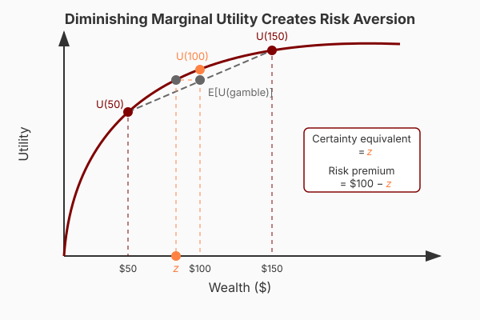
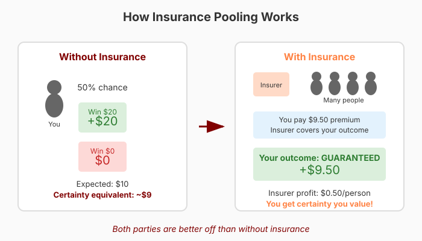
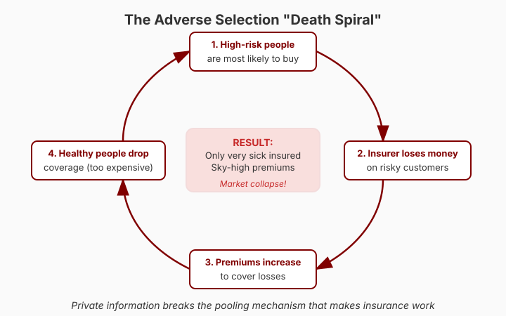

Economics for Everyone
Every time you step out the door, it might rain.
Every time you get behind the wheel, you might crash.
Every time you prepare for a test, you might fail—or ace it!
These events create risk that we face all the time.
But the stakes go far beyond umbrellas and midterms…
At any moment, someone might:
In the worst case, these risks spell financial catastrophe.
Modern economies profit from specialization.
But specialization often comes with volatility:
If individuals had to bear all risk alone, many would avoid specializing and choose safety over productivity.
Institutions that shield us from risk through tools like insurance are not peripheral.
They make modern economic life possible.
| Term | Definition |
|---|---|
| Risk aversion | Preferring certainty over gambles with the same expected value |
| Certainty equivalent | The guaranteed amount you’d accept instead of a gamble |
| Adverse selection | When high-risk individuals are more likely to buy insurance |
| Moral hazard | When insurance changes behavior in ways that increase costs |
| Unraveling | When adverse selection causes markets to collapse |
Suppose I offer you:
Option A
$100, guaranteed
Option B
50% chance of $300
50% chance of $0
What would you pick and why?
Option B has higher expected value:
\[\mathbb{E}[\text{Option B}] = 0.5 \times \$300 + 0.5 \times \$0 = \$150\]
But sometimes you make a lot more, and sometimes you make nothing.
If you really dislike making nothing, you might prefer the sure thing.
Our degree of risk aversion shapes how much we prefer sure things over gambles.
Most people are risk averse, meaning they would give up some expected value for certainty.
We are willing to pay for certainty.
I’m going to sell you the opportunity to play a game:
Question: What’s the most you’d pay to play?
You’ll report your maximum willingness to pay.
But be warned:
Don’t underbid—you might miss a great deal!
Don’t overbid—you might pay more than you wanted!
[Poll Everywhere link]
[Discussion: What is the mean? What are the tails?]
Expected value of the game: $10
Average willingness to pay: ~$9 (typically)
The gap reveals risk aversion.
[Venmo QR code]
The intuition comes from how we experience gains and losses.

Your first $100 feels more valuable than your hundredth $100.
This means:
A fair gamble isn’t worth it when losses hurt more than gains feel good.
Average willingness to pay was ~$9, but the game pays $10 on average.
Is there a market opportunity here?
One of you might offer your classmates:
“Sell me your opportunity to play for $9.50. You keep that money, but I keep any winnings.”

Many people think insurance is a scam—companies profit by denying claims.
But as this example shows, insurance can make everyone better off:
For individuals:
For insurers:
Flip the game:
You’d pay more than $10—say $11—to avoid that risk.
An insurer happily takes your $11 and covers your bills.
Both parties are better off than without insurance!
Private markets provide many insurance products:
So why doesn’t the market handle everything?
Adverse selection — Who buys insurance?
Moral hazard — How does insurance change behavior?
Correlated risks — What if everyone needs payouts at once?
Our coin flip game worked because risks were common knowledge.
Everyone had a 50-50 chance, and we all knew it.
But in reality, individuals often have private information about their risk.
An insurer knows your age, sex, income, occupation…
But they might not know:
Often insurers are legally barred from using this information.
New setup:
Who would be most likely to sell their gamble for $9?

This process can create a death spiral:
The private market fails to provide insurance.
We let people choose whether to participate.
They make those decisions using private information about risk.
This breaks the pooling mechanism that makes insurance work.
The government can compel everyone to participate.
But there’s no free lunch…
Even if mandates help the sick, young healthy people would rather not participate.
This helps explain why mandates are so contentious!
Even without adverse selection, being insured can change what you do.
This is called moral hazard.
AppleCare on your iPhone:
Are you more or less likely to use a bulky case?
Comprehensive car insurance with no deductible:
How carefully do you park?
Free doctor visits (no copay):
What happens to healthcare utilization?
Insurance changes behavior ex-post (after you’re covered).
This:
We get too many broken iPhones, too many bumper dings, too many doctor visits.
Insurance products are designed to combat moral hazard:
Deductibles: You pay the first $500 of damage
Copays: You pay $20 per doctor visit
Coinsurance: You pay 20% of costs
These keep you somewhat exposed to costs, preserving incentives.
Getting insurance right means balancing:
We’re in the world of second-best solutions.
Our examples assumed risk was independent.
Whether one person wins $20 is unrelated to whether anyone else does.
Some risks look like this (health), while others don’t (layoffs, floods).
Suppose I offer insurance against:
Global warming raises temperatures by more than 3°C in the next 25 years
Scientists say this is both possible and would be catastrophic.
Would any insurer offer this product?
Best case: Temperatures stay low, insurer keeps all premiums.
Worst case: Temperatures spike, insurer owes everyone at once.
Total insolvency!
The same problem crops up in:
Private insurers can’t credibly promise to pay.
Government can help by:
But even governments have limits.
Next time: How markets allocate goods and why they sometimes need help.